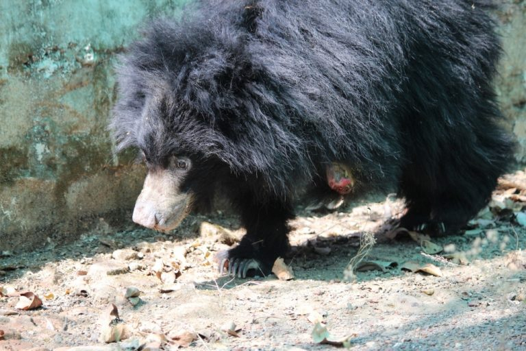

Rescue Stories
Read heartwarming stories of animals we have helped and their journey to recovery.
1)Mohan, the world’s unluckiest elephant
Finally walks free Having spent nearly 50 years in captivity, begging elephant Mohan finally had a chance to break away from his shackles after Wildlife SOS’s persistent efforts over two years to win him freedom. This has been the most challenging and the biggest of the NGO’s elephant rescues till date! Formerly known as the world’s unluckiest elephant, Mohan has come a long way in the few short months since his much-awaited rescue. It is heart-warming to watch him taking his first steps towards the road to recovery, and enjoying a much-deserved life of freedom along with fellow pachyderms at the Wildlife SOS Elephant Conservation & Care Centre!
2)Drowning leopard rescued from 60-feet-deep well in Maharashtra
A nerve-wracking rescue operation, a four-year-old female leopard was rescued from a remote village in Maharashtra after it had the misfortune of falling into a 60-foot-deep well. The terrified animal was on the verge of drowning and was desperately clinging onto a rope to stay afloat. With the help of the local villagers, the team from Manikdoh Leopard Rescue Center had to lower a wooden platform into the well to give the leopard a chance to clamber out of the water and onto a safe space before lowering a trapping cage inside the well. However, the sight of the cold metal cage aggravated the already petrified big cat and it even took a few swipes at it, only to end up losing its balance, much to everyone’s dismay. After regaining a hold on the platform and realising that the box was its last hope for survival, in a swift movement, the leopard jumped into the cage. Upon close examination, the animal was found to be physically fit, and was later released back into the wild.

3)Rose the spirited bear cub
Wildlife SOS saw another major addition to their rescued sloth bears at Agra, at the world’s largest sloth bear rehabilitation centre. The centre currently houses 200 former ‘dancing bears’ that were rescued from Kalandar communities (who were dependent on sloth bears to earn a living). A brutally maimed and abandoned three-month-old bear cub was found near a village in Bhopal. The young bear had lost her left fore-limb to a poacher’s snare, leaving her severely injured and inevitably handicapped for the rest of her life. Following a series of intensive surgeries to amputate the severed leg and to suture the skin over her exposed leg bone, Rose, as she has been fondly named by the staff, is now on a positive road to recovery at the Agra Bear Rescue Center.